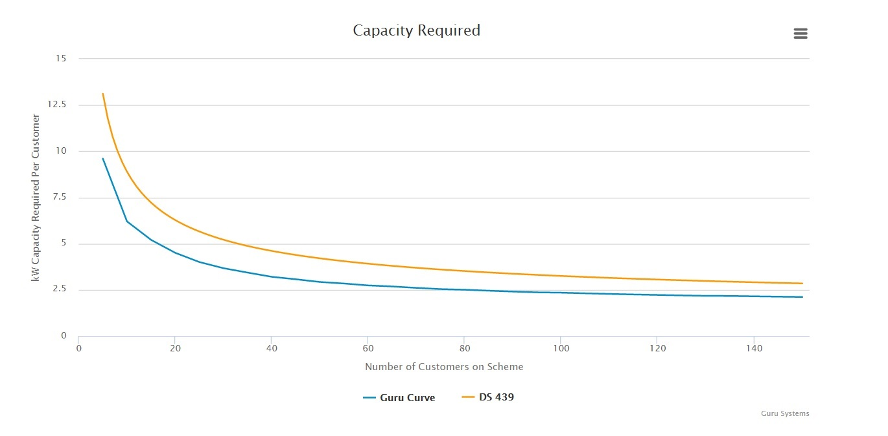

Case study: Guru Systems improving energy efficiency through open data
- Summary
- Facts and figures
- What is the challenge?
- Operational inefficiencies
- Heat network oversizing
- Impact on industry
- How are they solving the problem?
- Creating Pinpoint
- Going open
- Tackling oversizing
- What was the impact of taking this approach?
- Projected impact of Pinpoint
- Projected impact of releasing open data
- What lessons did they learn?
- Creating trust through transparency
- Looking to the future
- How to cite this case study
Summary
Guru Systems is a London-based smart payment and energy-efficiency technology company.
The company was founded in 2012 to address debt risk and inefficiency in the onsite energy sector.
Onsite or decentralised energy is a form of heat production that sees energy produced at a central point and distributed to homes or buildings on a network – these networks can range from several homes to entire communities.
Guru Systems now supplies its smart payment systems and monitoring tools to more than 100 heating and cooling networks across the UK. These existing systems calculate the cost of energy production at the source and monitor energy use in individual properties, allowing network operators to bill residents correctly for the energy they use, while pay-as-you-go hubs in homes show energy use in real-time.
In April 2016 the company launched another offering to the sector, thanks to backing from the Department of Energy and Climate Change (DECC). Pinpoint, a web-based platform, allows operators of heat networks to monitor the performance of their networks in real time, identify performance issues and optimise the efficiency of their networks. For example, it can help operators identify where pipes and valves bringing heat into a residence are damaged, without relying on the resident noticing or engineers entering the property.
As well as enabling operators to run efficient networks, driving down energy bills for residents and reducing energy consumption, the platform also provides anonymised, aggregated open data which can help engineers to design more efficient systems.
Guru Systems has been an Open Data Institute (ODI) member since October 2015. In late 2015, it enlisted the ODI to advise on the best ways to share data appropriately, while keeping personal and confidential data secure.
Facts and figures
Pinpoint is a real-time data analytics platform for managing heat network efficiency – created by Guru Systems with financial support from DECC.
Using Pinpoint could save the industry over £233 million and 1.3 million tonnes of CO2 over 10 years – according to Guru Systems’ projections.
Guru Systems has released open data from the platform– with the help of the ODI, which can help engineers correctly size new heat networks.
Using the open data could save the industry just under £400 million and more than 800,000 tonnes of CO2 over 10 years— according to Guru Systems’ projections.
What is the challenge?
Heat networks are designed to be lower carbon than conventional central heating systems, with heat produced at a central plant from low-carbon sources, rather than by boilers in individual properties. Because of this they can realise efficiency gains, lower costs and carbon savings.
© Copyright ADE 2016 available here
Already popular in the US, Germany, Sweden and Denmark, heat networks are a key part of the UK government’s strategy for meeting decarbonisation targets under the Climate Change Act 2008. The Chancellor emphasised their importance in the 2015 Spending Review, when £320m was allocated to support the expansion of these schemes. In London, the Mayor’s office is committed to delivering 25% of London's energy supply by decentralised energy by 2025.
Operational inefficiencies
Heat networks can be much less efficient than expected. Because the systems are distributed across a range of buildings and properties, which are not always owned or administered by the network supplier, there are many points of potential failure. This can result in poor operational efficiency, if, for instance, something goes wrong with the system in a resident’s flat without their knowledge.
Heat network oversizing
Arguably, the biggest and most common design problem for heat networks is oversizing. This results in capital budgets being wasted on plant, pumps and pipework that are larger than required. It also results in poorer energy and heat efficiency of the system over its service life.
This is a common problem because designers lack confidence that their designs will meet peak demand. To avoid liability risk and potential legal action, they compensate by oversizing, because they have few incentives to do otherwise. This lack of incentive results in a significant degree of oversizing; Guru Systems routinely encounters systems designed for loads four or five times larger than they will ever actually experience.
Impact on industry
The operational and design problems on heat networks can result in significant inefficiencies, driving up installation and operational costs for operators, increasing carbon emissions, damaging the environment and failing to meet government targets.
If heat networks are to be a common source of low-carbon, cost-effective energy, these challenges must be addressed.
How are they solving the problem?
Guru Systems recognised that a key issue with heat networks was the lack of operational monitoring data. In many cases operational data was not being collected from across the whole system, in particular within individual residences. Even where it was, it was not being fully utilised by operators. Importantly, it was very rarely shared between operators and with others.
This meant that the engineers who design and install these systems, the developers and housing associations that run them and the government, which needs them to meet carbon targets, could not learn from the existing systems or each other.
Creating Pinpoint
In late 2014, DECC put out a call for proposals as part of a competition designed to improve the efficiency of heat networks.
Guru Systems saw an opportunity to help tackle these issues by unlocking the various operational monitoring data silos and improving data sharing across the industry. DECC recognised the merit of Guru Systems’ proposal and provided the company with funding to get the project off the ground.
The result was Pinpoint, a user-friendly web-based visualisation and analysis tool, which draws on a wide range of network performance data – from smart meters, building management systems, M-Bus networks (a system for the networking and remote reading of utility meters) or manual readings.
The variety of data Pinpoint ingests is key, tracking performance across the network from generation to distribution to use. From this wealth of data, Pinpoint allows operators to identify inefficiencies and issues at any point in the system, including in individual properties.
In addition to identifying issues, Pinpoint suggests costed measures for improvements to the system so that clients can see the impact of any possible interventions. Meanwhile, machine-learning algorithms are trained to recognise patterns in the problems they discover, allowing the platform to constantly evolve and improve itself.
Going open
Guru Systems wanted the Pinpoint platform to improve data sharing between users in a secure and anonymised way. The company did this so that the industry, including its clients, could benefit from shared experience, which would in turn strengthen its own value proposition. The company asked the ODI to advise on what data to share and how to ensure sensitive data remained secret and protected. Transparency around the use of customer data was crucial to ensuring that users would not be put off using the system. Guru Systems wanted to build trust that the platform would not share any sensitive personal data.
What Guru Systems realised, with help from the ODI, was that it could open up some of the data Pinpoint was generating without compromising any personal or commercially sensitive data. Communicating effectively to users what data would be made open and that it would not include personal or commercially sensitive data was a key part of the strategy to ensure trust in the platform was not diminished.
Guru Systems was convinced that a particular kind of anonymised data would bring the most value, both to itself and more widely, if it was open. There were three factors that helped the company realise that making this data open would align with the needs of its business.
First, there was the potential to gain market share for Pinpoint by driving operators to the platform. Releasing a valuable open dataset attracts operators to the platform where it is made available. Guru Systems hopes to entice operators to explore the more detailed data analysis tools available on the platform, which can help them optimise their own networks.
Second, Guru Systems expects that by lowering the upfront costs to install heat networks, the release will help grow the overall UK market. This in turn creates a larger potential market for Pinpoint.
Third, Guru Systems could demonstrate that it is an innovative data-driven SME that is willing to work openly to help improve the entire industry.
Tackling oversizing
There are several existing competing standards to help engineers with sizing calculations, such as the Danish DS 439 and British BS 6700 standards. However, these are not directly based on real-world data and can overestimate size requirements. Guru Systems decided to release two pieces of data to help engineers design and install more suitably sized systems. These are peak demand per flat and an allowance for the fact that residents probably won’t call for heat at the same time (called the diversity factor).

The initial launch saw the company release new diversity curves, published under a Creative Commons ShareAlike licence. The curves are based on more than 40m real-world data points across 2,000 dwellings and will be updated as more data flows into the platform.
What was the impact of taking this approach?
Guru Systems has carried out detailed analysis and modelling of the economic and environmental impact of the Pinpoint system and the release of open data over 10 years. This analysis takes into account the existing market, projected market growth from BSRIA and DECC, market experience curves and projected market penetration of both Pinpoint and the open data provided by Guru Systems. It carried out this analysis across a number of different scenarios that take into account different levels of optimism. The output was produced as part of its reporting to DECC and reviewed by the ODI.
Projected impact of Pinpoint
Guru Systems has already piloted Pinpoint on four projects, including a 115-unit housing association scheme. In this case, anomalies in the data allowed Pinpoint to identify a significant heat loss between the corridors and individual flats. Using the platform, Guru Systems was able to determine the root cause of the inefficiency – a lack of insulation and damage to components within flats from oversized equipment.
After rectifying the issues, overall network losses were reduced by 68%. This led to a reduction in the tariff paid by residents by almost 50%, from 7.7p to 3.8p per kwh. The total cost of interventions was projected to have a two-year payback period for the housing association.
Based on these pilot interventions, Guru Systems has projected potential savings across the sector in its base case scenario of over £233 million and 1.3 million tonnes of CO2 over 10 years. These savings come from using Pinpoint across a range of different market segments, including existing and new build projects.
The cost savings come from the lower energy production requirements of more efficient systems and lower capital expenditure savings on new build systems. They also include the cost to industry of installing and using Pinpoint itself. The CO2 savings come from the reduction in fuel usage and avoiding the extra emissions that would have been produced from the increased size of equipment.
Projected impact of releasing open data
Equipped with the real-world open data published by Guru Systems, engineers should be able to more confidently specify correct system sizes without worrying that they are endangering their professional indemnity insurance. If the engineers and the industry are willing to switch over to using these diversity curves, the projected impact could be significant.
Guru Systems has calculated that total savings over 10 years could be just under £400 million and more than 800,000 tonnes of CO2. The financial savings mainly come from lower capital expenditure (68%) as well as increased fuel efficiency across the lifetime of these new systems. Likewise, the carbon savings come from operational fuel reductions and savings in the embodied CO2 of the smaller systems compared to the alternative.
The data is particularly useful for us at DECC. We need the real-world evidence about how we could reduce costs and improve the energy efficiency of heat networks, and to get to that point we have to disseminate all of the learning that is coming out of innovations, such as Guru Pinpoint.
– David Wagstaff, Head of Heat Networks Team at the Department of Energy and Climate Change (DECC)
These figures are substantial but they entirely depend on the level of uptake of open data within the industry, which is difficult to predict. Guru Systems believes that the strength of its data collection methodology and all of the effort it has put into ensuring trust means it can get significant buy-in. To achieve the monetary savings and CO2 reductions described above, the open data would need to be used to size 20% of new heat networks built in 2016, up to 50% in 2017, 70% in 2018 and 80% from 2019 to 2026.
Realising this level of uptake for new build systems requires the industry to be receptive to a new and evolving standard based on real-world data. Guru Systems believes this is possible given the almost zero marginal cost to engineers in utilising the data.
This kind of innovative industry collaboration is central to creating a more local, less wasteful energy system that works for the user. Access to high quality data is vital to making existing and future networks perform at their best to deliver the greatest reliability and value to customers. By feeding projects like this into best practice we can continue to raise industry standards and give district heating consumers even more peace of mind.
– Dr Tim Rotheray, Director, Association for Decentralised Energy (ADE)
What lessons did they learn?
The main issue for Guru Systems around data collection was gaining the trust of operators, which wouldn’t normally share data because of commercial confidentiality concerns. The company also had to make sure data taken from individual flats was secure, given the potentially identifying nature of the information. Lastly, it needed to maximise the impact of the data it could make open by ensuring others could have confidence in it, and therefore use it.
Creating trust through transparency
Guru Systems has worked very hard to ensure measures are taken so operators can participate without fear of giving away anything personal or sensitive. The company has created very transparent processes and made sure that client data sitting on the platform can be deleted quickly if the client requests.
Guru Systems was also worried about the potential implications of openly publishing data that was in any way inaccurate. Fear that the data could be wrong would likely dissuade anyone from using it and generally damage the reputation of Guru Systems and Pinpoint.
In order to counteract this, it developed its methodology with help from a large number of well-respected industry experts. To further encourage confidence in the data, Guru Systems clearly stated and explained the methods it used to create the data alongside the data itself. By opening up the methodology as well as the data, the company is able to generate trust in the data it has released.
Looking to the future
Guru Systems is now working on increasing uptake of Pinpoint and the open data released as a result.
The Guru Pinpoint project is part of something bigger. Our aim is to get diversity curves based on real-world data incorporated into the Heat Networks Code of Practice, which is the definitive engineering manual for heat networks in the UK. This will require more data gathering and close scrutiny of the calculation methods by a range of stakeholders, including Chartered Institution of Building Services Engineers (CIBSE) and the Association of Decentralised Energy (ADE), but the effect on the market could be huge.
– Casey Cole, Managing Director of Guru Systems
If the curves are adopted by the code, the level of trust, exposure and uptake of the open data will likely be very high. As a result, Guru Systems is much more likely to achieve, and perhaps outperform, its projected savings across industry over the next 10 years.
How to cite this case study
This case study was published in August 2016 by the Open Data Institute.
Please cite this case study as follows: Open Data Institute (2016) Case study: Guru Systems. London, UK. Available at ../case-studies/case-study-gurusystems
Author: Jamie Fawcett
Editor: Laura Davis
Production: Phil Lang
Contact: [email protected]
Supported by